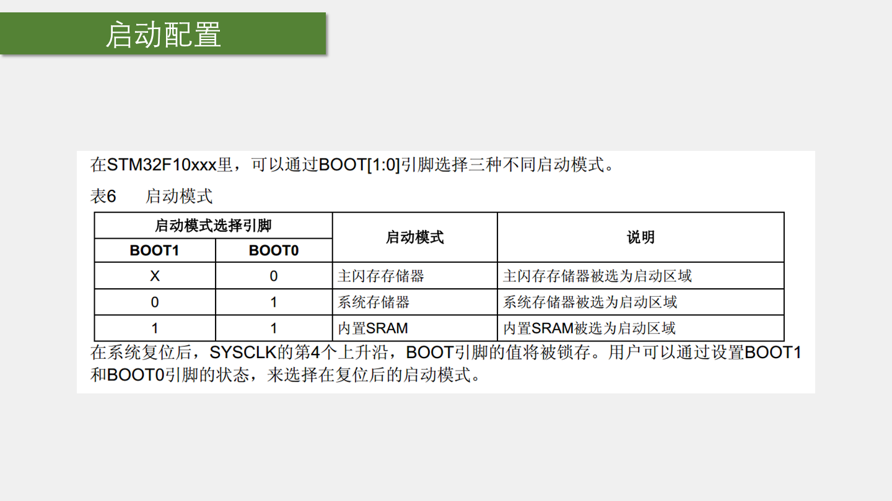
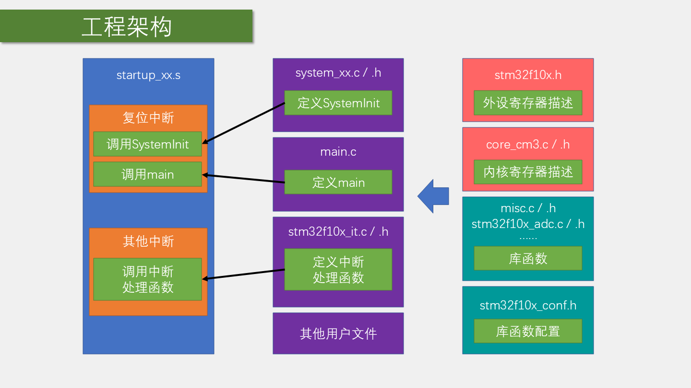

这一课要解决的问题
本课目标
读完并动手做完，你能：把 ST-Link 正确接到蓝板上；在 CubeIDE 里从零建出一个工程；看懂 CubeMX 生成的每一行初始化代码在干什么；把程序烧进去让 PC13 的灯闪起来；用断点和 Live Expressions 看到程序内部的变量。
这一课是全程最重要的一课。不是因为它难，而是因为后面 17 个知识点全部建立在"你能自己把程序烧进板子"这件事上。这一步通了，剩下的都是往里加功能。
先对一下工具
你走 HAL + CubeIDE，而参考视频（江协科技）用的是 Keil + 标准库。本节涉及的所有原理（Boot 引脚、SWD、时钟、GPIO 输出）两者完全一致；只有软件界面和函数名不同。我会在每个地方标出视频里的对应说法，你对照着看不会打架。
1. 开工前：线怎么接
蓝板右侧那 4 个针（有的板子印着 3V3 DIO CLK GND）就是 SWD 接口，和 ST-Link 的 4 个孔一一对应。
四条线的分工：
- 3V3：给板子供电。如果你另外用 USB 线给蓝板供电，这条可以不接（不要两边同时供，容易互灌）。
- GND：必须接，这是所有信号的参考零点。只接三根信号线不接 GND 是最常见的失败原因。
- SWDIO / SWCLK：真正的数据和时钟通道，只有这两根。
接线两大坑
- 丝印反了：市面上十几块的 ST-Link 克隆版，有的板子上
SWDIO与SWCLK的丝印和实际相反。如果接线完全正确却报 "No STM32 target found"，把这两根对调试一次，十有八九就好了。 - 只接三根不接 GND：ST-Link 有时还能"识别"到芯片，但下载总失败、或者断点行为诡异。看起来像玄学，本质是参考地不一致。
2. 为什么非要 ST-Link：SWD 与串口下载的区别
这是本课第一个需要真正理解的点。字幕里（第 30 集）花了大半集讲串口下载，正好用来对照。
STM32 出厂时 Flash 里是空的，芯片本身不认识"下载"这件事。所以要让程序进芯片，只有两条路：
路线 A：串口下载（视频里的 FlyMcu） —— 靠 ST 公司出厂固化的 Bootloader。
第 30 集那段"机器人自己换电池"的比喻说得非常好，我换个说法再讲一遍：
- 芯片要更新自己，就必须运行一段"负责写 Flash"的程序。
- 但这段程序本身也在 Flash 里，写 Flash 时不能同时读它——就像机器人不能一边拆自己的电池一边工作。
- 所以 ST 在 Flash 末尾的隐藏区域（系统存储器
0x1FFF_F000）放了一个独立的"小机器人"，它就是 Bootloader，永远不被擦除。 - 你要串口下载时，把 BOOT0 接 1、BOOT1 接 0，再按复位，芯片就从那里启动，跑那个小机器人。小机器人通过 USART1 收数据，写进
0x0800_0000。 - 下载完把 BOOT0 跳回 0，再按复位，才回到你自己的程序。
为什么切换 BOOT 引脚后必须按复位
参考字幕原文："STM32 只有在刚复位时才会读取 BOOT 引脚，程序运行之后切换 BOOT 引脚是无效的。" 芯片在复位后的第 4 个系统时钟上升沿锁存一次 BOOT 电平，之后就再也不看了。所以插了跳线帽不按复位，等于没插。
路线 B：SWD 下载（你的 ST-Link） —— 不走 Bootloader，直接"外挂"写 Flash。
ST-Link 通过 SWD 两根线，直接访问芯片内部的 Debug Access Port。这个通道是芯片硬件级的调试接口，和 CPU 在跑什么程序无关，所以：
- 不需要切 BOOT 引脚，不需要按复位；
- 程序正在跑的时候也能下载、能暂停、能读变量（这就是在线调试）；
- 不需要芯片里先有程序。
两条路的本质区别
串口下载 = 让芯片自己擦写自己（要借 Bootloader，要切 BOOT 引脚）。 SWD 下载 = 外部工具直接改芯片的 Flash（芯片配不配合都行）。
所以 ST-Link 不只是"下载器"，它是调试器。面试问"你怎么调试 STM32"，答"SWD 打断点 + Live Watch 看寄存器"就是标准答案。
那 BOOT0 现在还要管吗
要。虽然 SWD 下载不依赖 BOOT0，但芯片从哪开始执行程序仍然由它决定。BOOT0 停在 1 上，你烧进去的程序永远不会跑——现象就是"烧写成功，灯不亮"。第 1 课强调过这点，这里再确认一次：平时 BOOT0 必须在 0 那一侧。
3. 建工程：CubeMX 里每一步在做什么
打开 STM32CubeIDE，走这条路：
File → New → STM32 Project
3.1 选芯片
弹窗顶部有两个标签：Board Selector 和 MCU/MPU Selector。选 MCU/MPU Selector。
原因：蓝板是第三方板，不是 ST 官方开发板，Board Selector 里没有它。搜 STM32F103C8，选中 STM32F103C8Tx → Next。
工程路径
工程名和路径不要出现中文和空格。CubeIDE 的构建工具链对非 ASCII 路径会报一堆莫名其妙的错（比如 make: *** No rule to make target）。建在 D:\mcu\stm32_led 这种路径下最稳。
工程名字填 stm32_led，其他保持默认（C 语言 / Executable / STM32Cube / STM32CubeIDE）→ Finish。
弹出 "Initialize all peripherals with their default Mode?" → 选 Yes。意思是按芯片默认状态初始化，不会给我们添乱。
3.2 配置 SYS：Debug = Serial Wire
左边 System Core → SYS，把 Debug 从 No Debug 改成 Serial Wire。
这一步不做的后果（新手第一大坑）
PA13 和 PA14 就是 SWD 的两根线。如果 Debug 选 No Debug，CubeMX 会把这两个脚当普通 GPIO 配掉。程序一跑起来，SWD 通道就断了，下次 ST-Link 再也连不上，报 No STM32 target found。
救回来的办法：CubeIDE 的下载配置里把 Reset Mode 改成 Connect Under Reset（复位期间强行连接），或者用 STM32CubeProgrammer 加 Under Reset 模式擦除。这个操作能救 95% 的"变砖"。
所以：新建工程第一件事就是配 SYS，别等写完代码才想起来。
3.3 配置 RCC：HSE = 外部晶振
System Core → RCC，High Speed Clock (HSE) 选 Crystal/Ceramic Resonator（晶体/陶瓷谐振器）。
为什么：蓝板上焊了一颗 8MHz 石英晶振（第 1 课说的最小系统要素之一）。STM32 内部也有一个 8MHz 的 RC 振荡器（HSI），但它精度只有 ±1%，且随温度漂移。石英晶振能到 ±20ppm（百万分之二十）。
为什么精度重要
串口通信对时钟很敏感：波特率是由时钟分频出来的，时钟偏 3% 就可能收错字节。做串口、做定时、做 RTC 时，HSI 会让你莫名其妙地丢数据。所以初期就用 HSE，别图省事。
3.4 配置时钟树：8MHz → 72MHz
点顶部的 Clock Configuration 标签，把 PLL Source Mux 选 HSE，PLLMul 选 X9，System Clock Mux 选 PLLCLK，然后在 HCLK 框里输入 72 回车，让软件自动算分频。
结果应该是：
| 项目 | 值 | 说明 |
|---|---|---|
| HSE | 8 MHz | 外部晶振 |
| PLL ×9 | 72 MHz | 锁相环倍频 |
| SYSCLK | 72 MHz | 系统时钟 |
| AHB 预分频 | /1 → 72 MHz | 内核、内存、DMA |
| APB1 预分频 | /2 → 36 MHz | 低速外设（上限 36MHz，不能改） |
| APB2 预分频 | /1 → 72 MHz | 高速外设（GPIO、USART1、ADC） |
APB1 为什么必须 /2
F103 规定 APB1 最高只能 36MHz，而系统要跑到 72MHz，所以只能二分频。这是硬约束，配成 /1 会直接报错。
有意思的是：APB1 上的定时器时钟仍然是 72MHz。因为芯片里有一条"若 APB1 预分频 ≠ 1，则定时器时钟 ×2"的补偿支路。字幕第 13 集专门讲过这条，它解决了一个常见困惑——"为什么 TIM2 挂在 36MHz 的总线上却能按 72MHz 算定时"。这条在 s9 讲定时器时会成为关键。
3.5 配置 PC13 为输出
回到 Pinout & Configuration 标签。在芯片图上找到 PC13（蓝板 LED 接的就是它），左键点击 → 选 GPIO_Output。
然后在左边 System Core → GPIO 里点开 PC13，逐项设置：
| 配置项 | 选什么 | 为什么不选别的 |
|---|---|---|
| GPIO output level | Low | 蓝板 LED 是"阳极接 3.3V、阴极接 PC13"，低电平才亮。选 Low 表示初始化完成后立刻点亮 |
| GPIO mode | Output Push Pull（推挽） | 推挽能主动输出高和低。开漏（Open Drain）只能主动拉低，要亮灯必须外接上拉电阻，这里不需要 |
| GPIO Pull-up/Pull-down | No pull-up and no pull-down | 推挽输出自带驱动能力，再加内部上下拉是多余的，还会白白多耗电 |
| Maximum output speed | Low | 速度指电平翻转的最大速率，越快噪声和功耗越大。点个灯 2MHz 都嫌多，选 Low 最干净 |
为什么低电平点亮
看板子走线：3.3V → 电阻 → LED 正极 → LED 负极 → PC13。电流要从 3.3V 流进 PC13 才能点亮，也就是 PC13 必须是低电位（灌电流）。所以 HAL_GPIO_WritePin(GPIOC, GPIO_PIN_13, GPIO_PIN_RESET) 才是"开灯"。
这也解释了为什么 CubeMX 里 GPIO output level 默认是 Low 时，你一上电灯就是亮的。
PC13 是"残疾引脚"
数据手册明确写了：PC13/PC14/PC15 由低功耗电源域供电，灌电流最大只有 3mA，最高速度只能 2MHz，而且不能当电流源用。点一个 LED（约 3mA 以内，蓝板已串了限流电阻）刚好够，但绝对不要用它驱动继电器、蜂鸣器或电机。后面接外设时，换 PB0、PA5 这类正常引脚。
3.6 代码生成选项
Project Manager → Code Generator，勾上：
Generate peripheral initialization as a pair of '.c/.h' files per peripheral
作用：把 GPIO 的初始化单独放进 gpio.c，而不是全堆在 main.c 里。以后外设多了（串口、I2C、定时器），main.c 依然清爽。这是工程习惯问题，但不勾以后会很难受。
然后 Ctrl+S（或点齿轮图标 Generate Code），软件生成代码。
4. 生成的代码：逐行看它在干什么
本课工程只有两个你要看的文件：Core/Src/main.c（入口、时钟、主循环）和 Core/Src/gpio.c（PC13 初始化），外加两份 CubeMX 生成的头文件。下面按文件一块一块给完整内容——每一块都可以整份对照、整份替换，不是片段。
先看 main.h，它是 CubeMX 生成的"总头文件"：
文件：Core/Inc/main.h（CubeMX 生成，不用手写、不用改）
/* Core/Inc/main.h —— 全工程共用的总头文件 */
#ifndef __MAIN_H /* include guard：防止同一个头文件被重复包含 */
#define __MAIN_H
#ifdef __cplusplus /* 让 C++ 编译器按 C 的规则链接这些函数 */
extern "C" {
#endif
#include "stm32f1xx_hal.h" /* 一行把 HAL 全部外设头文件、CMSIS 一起包进来 */
void Error_Handler(void); /* 声明在这里，定义在 main.c 末尾 */
#ifdef __cplusplus
}
#endif
#endif /* __MAIN_H */
再看 main.c 本体。注意三句初始化分别落在不同文件里，main.c 只负责"按顺序调用"：
文件：Core/Src/main.c（CubeMX 生成框架，注释已改中文）
/* Core/Src/main.c —— 工程入口
* 只有 USER CODE BEGIN/END 之间的内容会在重新生成代码时被保留，其余都会被重写。
*/
#include "main.h"
#include "gpio.h" /* 只声明 MX_GPIO_Init()，实现在 gpio.c */
/* USER CODE BEGIN Includes */
/* USER CODE END Includes */
/* USER CODE BEGIN PV */ /* 私有变量区，本课暂时空着 */
/* USER CODE END PV */
/* Private function prototypes -----------------------------------------------*/
void SystemClock_Config(void); /* 实现在本文件下方，main() 第二句调用 */
int main(void)
{
/* USER CODE BEGIN 1 */
/* USER CODE END 1 */
HAL_Init(); /* ① 配 Flash 等待周期、NVIC 优先级分组、启动 1ms SysTick */
SystemClock_Config(); /* ② HSI 8MHz → HSE 8MHz → PLL ×9 → 72MHz */
MX_GPIO_Init(); /* ③ 开 GPIOC 时钟，把 PC13 配成推挽输出（代码在 gpio.c） */
/* USER CODE BEGIN 2 */
/* USER CODE END 2 */
while (1)
{
/* USER CODE BEGIN 3 */
/* USER CODE END 3 */
}
}
/* 把系统时钟从复位后的 HSI 8MHz 切到 HSE 8MHz → PLL ×9 → 72MHz */
void SystemClock_Config(void)
{
RCC_OscInitTypeDef RCC_OscInitStruct = {0}; /* 不清零 = 拿到随机分频值 */
RCC_ClkInitTypeDef RCC_ClkInitStruct = {0};
/* ① 开 HSE，让 PLL 以 HSE 为输入，×9 */
RCC_OscInitStruct.OscillatorType = RCC_OSCILLATORTYPE_HSE;
RCC_OscInitStruct.HSEState = RCC_HSE_ON; /* 启动外部晶振 */
RCC_OscInitStruct.HSEPredivValue = RCC_HSE_PREDIV_DIV1; /* 8MHz 不再二分频 */
RCC_OscInitStruct.PLL.PLLState = RCC_PLL_ON;
RCC_OscInitStruct.PLL.PLLSource = RCC_PLLSOURCE_HSE;
RCC_OscInitStruct.PLL.PLLMUL = RCC_PLL_MUL9; /* 8MHz × 9 = 72MHz */
if (HAL_RCC_OscConfig(&RCC_OscInitStruct) != HAL_OK)
{
Error_Handler(); /* HSE 起振失败 → 停在这里（现象见下面的 warn） */
}
/* ② 切 SYSCLK 到 PLL，并设三条总线的分频 */
RCC_ClkInitStruct.ClockType = RCC_CLOCKTYPE_HCLK | RCC_CLOCKTYPE_SYSCLK
| RCC_CLOCKTYPE_PCLK1 | RCC_CLOCKTYPE_PCLK2;
RCC_ClkInitStruct.SYSCLKSource = RCC_SYSCLKSOURCE_PLLCLK; /* 内核用 PLL 输出 */
RCC_ClkInitStruct.AHBCLKDivider = RCC_SYSCLK_DIV1; /* AHB = 72MHz */
RCC_ClkInitStruct.APB1CLKDivider = RCC_HCLK_DIV2; /* APB1 = 36MHz */
RCC_ClkInitStruct.APB2CLKDivider = RCC_HCLK_DIV1; /* APB2 = 72MHz */
if (HAL_RCC_ClockConfig(&RCC_ClkInitStruct, FLASH_LATENCY_2) != HAL_OK)
{
Error_Handler(); /* 分频配错（比如 APB1 填 DIV1）会进到这里 */
}
}
/* 初始化失败时停在这里，等调试器来抓 */
void Error_Handler(void)
{
__disable_irq(); /* 关中断：SysTick 停，HAL_Delay 也不再前进 */
while (1)
{
}
}
main.h 已经把 stm32f1xx_hal.h 包了进来，所以 main.c 里搜不到一串 HAL 头文件，不是漏了。
为什么这样拆：main() 只负责"按顺序调用"——时钟实现在 main.c、引脚实现在 gpio.c、中断入口在 stm32f1xx_it.c。一个文件只管一件事，后面挂了十个外设，main.c 也不会变成几百行；重新生成代码时，USER CODE 之外的内容被重写也不会影响你的逻辑。
三行初始化、一个死循环，一件事都不能少。逐个拆：
HAL_Init()
做三件事，顺序很关键：
- 配置 Flash 预取和等待周期。72MHz 下 Flash 读不过来，必须开预取缓冲（prefetch），否则代码执行会莫名变慢。
- 设置中断优先级分组为
NVIC_PRIORITYGROUP_4。意思是 4 位全部用于"抢占优先级"，没有"子优先级"。这个选择决定了后面所有中断怎么排队——s7 会专门讲。 - 把 SysTick 配成 1ms 中断，并启动。这是
HAL_Delay()能工作的基础（见下面的深挖）。
深挖：HAL_Delay 到底怎么实现
SysTick 是 Cortex-M3 内核自带的 24 位递减计数器。HAL_Init() 把它配成每 1ms 产生一次中断，中断里执行 uwTick++。
HAL_Delay(500) 的实现本质是（下面是把官方实现去掉中断保护后的简化示意，真实代码在 Drivers/STM32F1xx_HAL_Driver/Src/stm32f1xx_hal.c 的 HAL_Delay() 里，逻辑一致）：
文件：Drivers/STM32F1xx_HAL_Driver/Src/stm32f1xx_hal.c（HAL_Delay() 的简化示意，库源码，不用你写）
/* 简化示意，不是你要往工程里写的代码 */
uint32_t start = HAL_GetTick(); // 记下当前 uwTick
while (HAL_GetTick() - start < 500) { } // 空转等它涨到 500
于是有两个必然推论：
- 它靠中断驱动。如果中断被关了（比如在更高优先级的中断函数里），
uwTick不涨，HAL_Delay就永远出不来——死机。 - 它是忙等，CPU 在这 500ms 里什么正事都干不了。
这就是为什么"不要在中断里调用 HAL_Delay"是面试高频题，也是 s6 要讲"非阻塞定时"的动机。
SystemClock_Config()
把系统时钟从复位后的 HSI 8MHz 切到 HSE→PLL→72MHz。它在 Core/Src/main.c 里、main() 的下方，由 main() 的第二行调用。完整代码就是上面那份 main.c 里的 SystemClock_Config()（同一文件，这里不重复贴）：
几个容易改错的地方：
= {0}：两个结构体都是栈上的局部变量。不清零，里面就是上一段代码留下的垃圾值，HAL 会把每个字段都读一遍——垃圾值直接变成一个荒唐的分频。表现是"同一份代码偶发跑飞"。OscillatorType = RCC_OSCILLATORTYPE_HSE：只配 HSE。改成HSI，晶振根本不启动，PLL 没有输入，系统停在 8MHz。HSEPredivValue = DIV1：F1 的 PLL 输入端有个 2 分频器，是给 8~16MHz 以外的高频晶振用的。8MHz 再二分频，PLL 只能输出 36MHz，所有定时慢一倍。APB1CLKDivider = RCC_HCLK_DIV2：F103 硬规定 APB1 ≤ 36MHz。改成DIV1，HAL_RCC_ClockConfig()会直接返回HAL_ERROR进Error_Handler()，程序停住——比悄悄跑飞好查。FLASH_LATENCY_2：72MHz 下 Flash 来不及每个周期吐一条指令，必须等 2 个周期。填0会读到错指令（上电就 HardFault）；填3只是稍慢。CubeMX 按主频自动算，手改主频后要回头看这个数字。
为什么不自己写寄存器？等效的手写流程是这样（了解即可，不要放进工程）：
文件：Core/Src/main.c（等效对比，只用来理解原理，不参与编译、不用敲）
/* 手写 RCC 的等效流程，仅供对比，不参与编译 */
RCC->CR |= RCC_CR_HSEON; // 开 HSE
while (!(RCC->CR & RCC_CR_HSERDY)) { } // 死等：晶振坏了永远卡在这
RCC->CFGR |= RCC_CFGR_PLLSRC | RCC_CFGR_PLLMULL9;
RCC->CR |= RCC_CR_PLLON;
while (!(RCC->CR & RCC_CR_PLLRDY)) { }
RCC->CFGR |= RCC_CFGR_SW_PLL; // 切 SYSCLK 到 PLL
它更短、更快（少几次函数调用），代价是：没有超时保护（while 死等，晶振虚焊就永久卡死，连报错的机会都没有）、没有可读性（RCC_CFGR 第 22 位是啥得查手册）、换芯片要全部重写。HAL 多做的正是"检查 HSERDY 超时、返回 HAL_ERROR"——恰恰是出问题时唯一能给你线索的部分。省那几百纳秒，点灯场景毫无意义。
还有一部分代码你找不到、也不用写：
- Flash 预取：
HAL_Init()里已经打开了FLASH_ACR的预取位。SystemClock_Config()只管"改时钟"和"改等待周期"。 SystemInit()：在启动文件的Reset_Handler里，main()之前就执行了，负责复位后把时钟拉回 HSI、装好向量表。所以断在main()第一行时，时钟是 HSI 8MHz，这叫"还没配"，不叫"没配"。- 栈和堆的大小在
startup_stm32f103xb.s：Stack_Size = 0x400（1KB）、Heap_Size = 0x200（512B）。这个汇编文件由 CubeMX 按芯片型号带进来，不用手写。但要知道 1KB 很小：函数里开uint8_t buf[1500]局部数组就会踩穿栈，现象是"一进函数就 HardFault"，而编译完全不报错。
一个非常经典的现象：程序慢了大约 9 倍
如果晶振没起振（虚焊、负载电容不对、或者你根本没焊晶振），HAL_RCC_OscConfig() 会返回 HAL_ERROR。此时 PLL 无法工作，芯片回落到内部 HSI 8MHz继续跑——不报错，不崩溃，只是所有定时都慢了 9 倍。
字幕第 13 集里作者遇到过一模一样的事：他画的板子把晶振两个脚焊短路了，定时器定 1 秒实际过了约 9 秒。
判断方法：用调试器看 SystemCoreClock 变量，正常应该是 72000000，如果是 8000000，就是 HSE 起振失败。这个变量是排查时钟问题的第一现场。
MX_GPIO_Init()
如果你在 3.6 勾了"每个外设生成一对 .c/.h"，这个函数在 Core/Src/gpio.c，main.c 只是通过 gpio.h 调用它。这两个文件由 CubeMX 生成，内容就是下面这样，不用手写：
文件：Core/Inc/gpio.h（CubeMX 生成）
/* Core/Inc/gpio.h —— 只暴露 MX_GPIO_Init() 一个声明 */
#ifndef __GPIO_H
#define __GPIO_H
#ifdef __cplusplus
extern "C" {
#endif
#include "main.h" /* GPIOC、GPIO_PIN_13 这些宏和类型都来自这里 */
void MX_GPIO_Init(void); /* 实现在 gpio.c */
#ifdef __cplusplus
}
#endif
#endif /* __GPIO_H */
文件：Core/Src/gpio.c（CubeMX 生成，整个文件就这些）
/* Core/Src/gpio.c —— 只做引脚初始化 */
#include "gpio.h"
void MX_GPIO_Init(void)
{
GPIO_InitTypeDef GPIO_InitStruct = {0}; /* 必须清零：不清零 = 拿到栈上的垃圾值 */
/* ① 先开 GPIOC 的时钟——顺序不是仪式，是必须 */
__HAL_RCC_GPIOC_CLK_ENABLE();
/* ② 先把 PC13 置高（灭灯），避免初始化过程中灯闪一下 */
HAL_GPIO_WritePin(GPIOC, GPIO_PIN_13, GPIO_PIN_SET);
/* ③ 选引脚、定模式 */
GPIO_InitStruct.Pin = GPIO_PIN_13; /* PC13 */
GPIO_InitStruct.Mode = GPIO_MODE_OUTPUT_PP; /* 推挽输出 */
GPIO_InitStruct.Pull = GPIO_NOPULL; /* 不用内部上下拉 */
GPIO_InitStruct.Speed = GPIO_SPEED_FREQ_LOW; /* 2MHz，点灯足够 */
HAL_GPIO_Init(GPIOC, &GPIO_InitStruct); /* 一次性写进 CRH */
/* ④ 有别的引脚就在这继续重复 ②③ */
}
这段没有时钟配置那种"仪式感"，但每个字段的坑一点没少：
Mode = GPIO_MODE_OUTPUT_PP：写成GPIO_MODE_OUTPUT_OD（开漏）也不报错，但灯永远点不亮——开漏没有上管，拉不高，第 3 课细讲。写成GPIO_MODE_INPUT更常见，现象是"写什么都不变"，因为你把输入脚当输出用，写ODR根本不影响引脚。Pull = GPIO_NOPULL：推挽输出自己有驱动能力，配上下拉纯属多余。选PULLUP不会坏，只是白白多一条 40kΩ 到 3.3V 的通路。Speed = GPIO_SPEED_FREQ_LOW：这是"最大翻转速率"，不是"电流大小"。选 Low 只是边沿更缓、干扰更小，不影响能不能点亮。- 为什么只赋 4 个字段：F1 的
GPIO_InitTypeDef就Pin / Mode / Pull / Speed四项。你在 F4 教程里看到的Alternate字段是 F4 才有的，不是 CubeMX 漏生成。
第 ① 行是新手最迷惑的地方，值得单独说。
深挖：为什么每个外设都要"开时钟"
STM32 为了省电，所有外设默认时钟是关断的。时钟关着的时候，你往它的寄存器写值——写不进去，也不报错（总线直接忽略，或读回全 0）。
现象就是：代码逻辑完全正确，编译零警告，下载成功，但引脚一动不动。
__HAL_RCC_GPIOC_CLK_ENABLE() 展开后是往 RCC->APB2ENR 的第 4 位写 1。这一步在标准库里叫 RCC_APB2PeriphClockCmd(RCC_APB2Periph_GPIOC, ENABLE)——名字不同，做的事完全一样。
排查口诀：外设没反应，先查三件事——时钟开了吗？引脚复用对吗？模式配对吗？
第 ② 行 WritePin(..., GPIO_PIN_SET) 是把 PC13 先置高（灭灯）。注意这和我们在 CubeMX 里选的 Low 有出入——CubeMX 生成的顺序是"先按你选的电平写一次，再跑 HAL_GPIO_Init"。不同版本生成顺序略有差异，只要最终状态符合预期就行，不必纠结。
为什么不能把 ① 挪到后面：HAL_GPIO_Init() 最后是往 GPIOC->CRH 写值。GPIOC 时钟没开时，这几次写会被总线直接丢弃，不报错。挪错的后果就是"编译过、下载成功、灯永远不亮"，和第 6 节排障表里那条"烧写成功但灯不亮"长得一模一样。
为什么不用寄存器直接配：等效写法是往 GPIOC->CRH 的 bit20~23 写 0b0010（输出、2MHz、推挽）。能省一次函数调用，但五个字段被压进一个 32 位寄存器的某 4 位里，改一个参数要重新数位宽；而且 pin8 是 CRL/CRH 的分界，很容易算错端口。HAL 的代价只是每次初始化多几十个周期，换来的是"哪一行改了什么"一眼可见。
哪些没写：PA13/PA14 的 SWD 配置不在这个函数里，它在 Core/Src/stm32f1xx_hal_msp.c 的 HAL_MspInit() 中，由 CubeMX 按 SYS 的 Serial Wire 选项生成——那段代码打开 AFIO 时钟、关掉 JTAG 只留 SWD。两个脚虽然也是 GPIO，但它们是调试口，逻辑上不属于"应用外设"。
写入闪烁代码
在 while(1) 的 USER CODE BEGIN 3 和 END 3 之间插入这两行。插完之后，整个 main.c 是这样（可以直接整份对照，SystemClock_Config() 与 Error_Handler() 相对上一块没有变化）：
文件：Core/Src/main.c（本课最终版）
/* Core/Src/main.c —— 工程入口（本课最终版） */
#include "main.h"
#include "gpio.h"
/* USER CODE BEGIN Includes */
/* USER CODE END Includes */
/* USER CODE BEGIN PV */
/* USER CODE END PV */
/* Private function prototypes -----------------------------------------------*/
void SystemClock_Config(void);
int main(void)
{
/* USER CODE BEGIN 1 */
/* USER CODE END 1 */
HAL_Init(); /* ① Flash 等待周期 + NVIC 分组 + 1ms SysTick */
SystemClock_Config(); /* ② HSI 8MHz → HSE 8MHz → PLL ×9 → 72MHz */
MX_GPIO_Init(); /* ③ PC13 推挽输出（实现在 gpio.c） */
/* USER CODE BEGIN 2 */
/* USER CODE END 2 */
while (1)
{
/* USER CODE BEGIN 3 */
HAL_GPIO_TogglePin(GPIOC, GPIO_PIN_13); /* 翻转 PC13：亮变灭、灭变亮 */
HAL_Delay(500); /* 500ms，靠 HAL_Init() 配的 1ms SysTick */
/* USER CODE END 3 */
}
}
void SystemClock_Config(void)
{
RCC_OscInitTypeDef RCC_OscInitStruct = {0};
RCC_ClkInitTypeDef RCC_ClkInitStruct = {0};
RCC_OscInitStruct.OscillatorType = RCC_OSCILLATORTYPE_HSE;
RCC_OscInitStruct.HSEState = RCC_HSE_ON;
RCC_OscInitStruct.HSEPredivValue = RCC_HSE_PREDIV_DIV1;
RCC_OscInitStruct.PLL.PLLState = RCC_PLL_ON;
RCC_OscInitStruct.PLL.PLLSource = RCC_PLLSOURCE_HSE;
RCC_OscInitStruct.PLL.PLLMUL = RCC_PLL_MUL9;
if (HAL_RCC_OscConfig(&RCC_OscInitStruct) != HAL_OK)
{
Error_Handler();
}
RCC_ClkInitStruct.ClockType = RCC_CLOCKTYPE_HCLK | RCC_CLOCKTYPE_SYSCLK
| RCC_CLOCKTYPE_PCLK1 | RCC_CLOCKTYPE_PCLK2;
RCC_ClkInitStruct.SYSCLKSource = RCC_SYSCLKSOURCE_PLLCLK;
RCC_ClkInitStruct.AHBCLKDivider = RCC_SYSCLK_DIV1;
RCC_ClkInitStruct.APB1CLKDivider = RCC_HCLK_DIV2;
RCC_ClkInitStruct.APB2CLKDivider = RCC_HCLK_DIV1;
if (HAL_RCC_ClockConfig(&RCC_ClkInitStruct, FLASH_LATENCY_2) != HAL_OK)
{
Error_Handler();
}
}
void Error_Handler(void)
{
__disable_irq();
while (1)
{
}
}
为什么用 TogglePin 而不是"先写 RESET 再写 SET"：Toggle 只要一句，不用知道当前状态；两句 Write 要自己记"上次是亮还是灭"，中途被中断打断就可能记错。TogglePin 的本质是异或：GPIOx->ODR ^= GPIO_PIN_13，当前是 0 就变 1，是 1 就变 0。
为什么不在 while(1) 里写 for 循环闪 10 次：for (int i = 0; i < 10; i++) { Toggle; Delay(500); } 也能闪，但闪完循环结束，main() 会一路执行到函数末尾——Cortex-M 的 main() 一旦 return，会跳到未定义地址，通常直接 HardFault。while(1) 不是装饰，是"main 永不返回"的约定。
为什么不把 HAL_Delay 换成空 for 循环：for (volatile int i = 0; i < 100000; i++); 看着"不依赖中断"，但编译器一优化、主频一改，延时就全变，而且你根本不知道等了多少微秒。HAL_Delay 的单位明确是毫秒，代价是靠 SysTick 中断驱动——所以不能在中断函数里调用它，原因见上面 HAL_Init() 的 note。
为什么代码必须写在 USER CODE 之间
CubeMX 重新生成代码时，会整体重写 main.c，只保留 /* USER CODE BEGIN ... */ 与 /* USER CODE END ... */ 之间的内容。
写在区域外的代码，下次你改一个引脚配置、一按生成——全部消失，而且不提示。这不是 bug，是这个工具的设计契约。
顺带：注释里还会看到 /* USER CODE BEGIN Includes */、/* USER CODE BEGIN 0 */ 等，都是同一个道理。
5. 编译、下载、跑起来
具体操作：
- Ctrl+B 编译。底部 Console 出现
Build Finished且 0 error。 - F11（或点虫子图标）开始 Debug。第一次会弹窗要求创建调试配置，默认就是
STM32 Cortex-M C/C++ Application，直接 OK。 - 看 Console：出现
Download verified successfully和Target halted就成功了。 - 此时程序已停在 main 的第一行（这是 Debug 模式的默认行为），按 F8（Resume） 让它跑起来。灯开始闪。
Debug 模式 vs Run 模式
- Run（Ctrl+F11）：只下载并运行，不建立调试连接，速度快，脱机后还能继续跑。
- Debug（F11）：下载后停下来，建立 SWD 调试会话，可以打断点、看变量。
Debug 模式下点了停止按钮（红色方块），程序会被暂停，灯就不闪了。这是正常的，不是板子坏了。
6. 程序没跑起来：按这个顺序查
这张表请存下来，它是你后面所有调试的通用流程。
| 现象 | 最可能的原因 | 处理 |
|---|---|---|
| 编译报错找不到头文件 | 路径含中文/空格，或工程没生成完整 | 重建工程到纯英文路径 |
下载报 No STM32 target found |
DIO/CLK 接反、没接 GND、板子没供电 | 对调两根数据线；补 GND |
| 同上，且接线确认无误 | SWD 被程序关掉了（Debug 选了 No Debug） | 下载配置里 Reset Mode 改 Connect Under Reset |
下载报 Cannot access target / 读保护 |
芯片被开了读保护 | 用 STM32CubeProgrammer 解除读保护（会擦除全片） |
| 烧写成功但灯不亮 | BOOT0 在 1 上 | 跳回 0，按复位 |
| 灯常亮不闪 | 程序卡在 HardFault，或 while 里没写代码 | 调试器暂停，看停在哪；检查 USER CODE 区 |
| 闪得明显慢（约 9 倍） | HSE 没起振，回落到 HSI 8MHz | 调试看 SystemCoreClock 是否为 72000000 |
| 一上电就亮，过会儿才闪 | CubeMX 里 output level 选了 Low | 正常现象，想改了改配置 |
为什么"烧写成功但灯不亮"排第一
因为它最反直觉。软件全程没报错，你以为自己在查代码，其实问题在硬件跳线上。先看一眼 BOOT0，再怀疑代码——这个习惯能省你几个小时。
7. 在线调试：学会这个，效率翻十倍
这一节是"能面试"和"只能点灯"的分水岭。面试官问"你怎么定位一个 bug"，答案就在这里。
7.1 打断点
在 main.c 的行号左边双击，出现蓝色圆点就是断点。程序运行到这一行会停下来。
按 F8 继续跑到下一个断点。
断点怎么实现的
SWD 支持硬件断点：调试器把该地址的指令临时替换成 BKPT 指令，CPU 执行到就触发调试异常，被调试器接管。Cortex-M3 只有 6 个硬件断点，所以你不能到处乱打（超过就不生效，且不报错）。
7.2 单步
| 快捷键 | 含义 | 什么时候用 |
|---|---|---|
| F5 | Step Into 进入函数 | 想钻进 HAL_GPIO_TogglePin 看它到底写了哪个寄存器 |
| F6 | Step Over 跳过函数 | 只关心这一行执行完了，不想进去 |
| F7 | Step Return 跳出 | 进错函数了，退出来 |
| F8 | Resume 继续 | 跑到下一个断点 |
新手最该练的一招：F5 钻进 HAL_GPIO_TogglePin，一路看它怎么算出寄存器地址、怎么异或。看完你就彻底理解第 1 课那句"外设就是地址"了。
7.3 看变量：Live Expressions
Window → Show View → Live Expressions，点 + 输入变量名，运行时会实时刷新，不用打断点。
推荐盯这几个：
| 表达式 | 正常值 | 说明 |
|---|---|---|
uwTick |
每秒 +1000 | SysTick 的毫秒计数，能涨说明 1ms 中断在跑 |
SystemCoreClock |
72000000 |
时钟是否真的到了 72MHz |
GPIOC->ODR |
每 500ms 在 0x2000 和 0x0000 之间跳 |
第 13 位就是 PC13 的输出电平 |
最后一行特别值得看：0x2000 = 二进制 10 0000 0000 0000，第 13 位是 1，说明 PC13 输出高电平。你在代码里写的 GPIO_PIN_13，最终就变成这一个二进制位。
调试器为什么能在程序跑的时候读变量
因为 SWD 是硬件级的访问通道，不占用 CPU 的执行时间。调试器直接通过 AHB-AP 访问 SRAM 和寄存器，CPU 完全不知道有人在偷看。
这也是为什么调试器能读到 uwTick 的实时值，却几乎不影响程序时序。但如果加了断点，那确实会让程序停住。
8. 动手项目
动手项目
做一个"快闪 5 次 + 停 1 秒"的节奏灯
要求：PC13 上的灯以 100ms 间隔快闪 5 次（亮灭各 100ms），然后熄灭 1 秒，无限循环。
验收标准：
- 肉眼数得出"5 次快闪 + 1 秒停顿"，节奏稳定不抖。
- 用调试器暂停，程序停在
while(1)里的某一行，而不是停在HardFault_Handler。 - Live Expressions 里
uwTick在持续增长，SystemCoreClock显示72000000。
提示：5 次"亮灭"= 10 次翻转，所以在 app_led.c 里用 for 循环跑 10 次 Toggle。
文件放置表（按真实工程规范拆，业务逻辑不进 main.c）：
| 文件 | 文件夹 | 作用 |
|---|---|---|
main.h |
Core/Inc/ |
CubeMX 总头文件，只声明 Error_Handler() |
gpio.h |
Core/Inc/ |
声明 MX_GPIO_Init() |
gpio.c |
Core/Src/ |
PC13 推挽输出初始化（CubeMX 生成） |
app_led.h |
App/Inc/ |
节奏灯模块的宏与函数声明 |
app_led.c |
App/Src/ |
节奏灯的业务实现（快闪 + 停顿） |
main.c |
Core/Src/ |
只做初始化 + 调用 App_Led_Task() |
一、头文件
文件：Core/Inc/main.h
/* Core/Inc/main.h —— CubeMX 生成，不用手写 */
#ifndef __MAIN_H
#define __MAIN_H
#ifdef __cplusplus
extern "C" {
#endif
#include "stm32f1xx_hal.h"
void Error_Handler(void);
#ifdef __cplusplus
}
#endif
#endif /* __MAIN_H */
文件：Core/Inc/gpio.h
/* Core/Inc/gpio.h —— CubeMX 生成 */
#ifndef __GPIO_H
#define __GPIO_H
#ifdef __cplusplus
extern "C" {
#endif
#include "main.h"
void MX_GPIO_Init(void);
#ifdef __cplusplus
}
#endif
#endif /* __GPIO_H */
文件：App/Inc/app_led.h（自己写的，注意 include guard）
/* App/Inc/app_led.h —— 节奏灯模块对外接口 */
#ifndef __APP_LED_H
#define __APP_LED_H
#ifdef __cplusplus
extern "C" {
#endif
#include "main.h" /* 用到 GPIOC、GPIO_PIN_13，需要 HAL 类型 */
#define APP_LED_FLASH_TIMES 5U /* 快闪次数：亮灭算一次，需求是 5 次 */
#define APP_LED_FLASH_MS 100U /* 快闪间隔：亮 100ms、灭 100ms */
#define APP_LED_PAUSE_MS 1000U /* 快闪结束后保持熄灭 1 秒 */
void App_Led_Init(void); /* 上电先把灯置灭 */
void App_Led_Task(void); /* 主循环反复调用，跑完一轮约 2 秒 */
#ifdef __cplusplus
}
#endif
#endif /* __APP_LED_H */
二、驱动 / 初始化 .c
文件：Core/Src/gpio.c
/* Core/Src/gpio.c —— CubeMX 按"PC13 = GPIO_Output、Low、Push Pull、Low speed"生成 */
#include "gpio.h"
void MX_GPIO_Init(void)
{
GPIO_InitTypeDef GPIO_InitStruct = {0};
__HAL_RCC_GPIOC_CLK_ENABLE(); /* 不开时钟，后面写寄存器无效 */
HAL_GPIO_WritePin(GPIOC, GPIO_PIN_13, GPIO_PIN_SET);
GPIO_InitStruct.Pin = GPIO_PIN_13;
GPIO_InitStruct.Mode = GPIO_MODE_OUTPUT_PP; /* 推挽 */
GPIO_InitStruct.Pull = GPIO_NOPULL;
GPIO_InitStruct.Speed = GPIO_SPEED_FREQ_LOW; /* 2MHz */
HAL_GPIO_Init(GPIOC, &GPIO_InitStruct);
}
文件：App/Src/app_led.c（业务逻辑，完整实现）
/* App/Src/app_led.c —— "快闪 5 次 + 停 1 秒" */
#include "app_led.h"
/* 蓝板 LED 阳极接 3.3V、阴极接 PC13：写 RESET（低）才亮 */
void App_Led_Init(void)
{
HAL_GPIO_WritePin(GPIOC, GPIO_PIN_13, GPIO_PIN_SET); /* 置高 = 灭 */
}
void App_Led_Task(void)
{
uint8_t i;
for (i = 0; i < (APP_LED_FLASH_TIMES * 2U); i++) /* 5 次亮灭 = 10 次翻转 */
{
HAL_GPIO_TogglePin(GPIOC, GPIO_PIN_13); /* 翻转一次 */
HAL_Delay(APP_LED_FLASH_MS); /* 亮或灭各保持 100ms */
}
/* 第 10 次翻转后已经等了 100ms，再补 900ms，正好"停 1 秒" */
HAL_Delay(APP_LED_PAUSE_MS - APP_LED_FLASH_MS);
}
三、main.c
文件：Core/Src/main.c（只剩初始化 + 调度，不含任何业务函数）
/* Core/Src/main.c —— 入口：只做初始化和循环调用 */
#include "main.h"
#include "gpio.h"
#include "app_led.h" /* App/Inc 必须加进头文件搜索路径 */
/* USER CODE BEGIN Includes */
/* USER CODE END Includes */
/* USER CODE BEGIN PV */
/* USER CODE END PV */
void SystemClock_Config(void);
int main(void)
{
/* USER CODE BEGIN 1 */
/* USER CODE END 1 */
HAL_Init();
SystemClock_Config();
MX_GPIO_Init();
/* USER CODE BEGIN 2 */
App_Led_Init(); /* 上电先灭灯 */
/* USER CODE END 2 */
while (1)
{
/* USER CODE BEGIN 3 */
App_Led_Task(); /* 业务细节全在 App/Src/app_led.c 里 */
/* USER CODE END 3 */
}
}
void SystemClock_Config(void)
{
RCC_OscInitTypeDef RCC_OscInitStruct = {0};
RCC_ClkInitTypeDef RCC_ClkInitStruct = {0};
RCC_OscInitStruct.OscillatorType = RCC_OSCILLATORTYPE_HSE;
RCC_OscInitStruct.HSEState = RCC_HSE_ON;
RCC_OscInitStruct.HSEPredivValue = RCC_HSE_PREDIV_DIV1;
RCC_OscInitStruct.PLL.PLLState = RCC_PLL_ON;
RCC_OscInitStruct.PLL.PLLSource = RCC_PLLSOURCE_HSE;
RCC_OscInitStruct.PLL.PLLMUL = RCC_PLL_MUL9;
if (HAL_RCC_OscConfig(&RCC_OscInitStruct) != HAL_OK)
{
Error_Handler();
}
RCC_ClkInitStruct.ClockType = RCC_CLOCKTYPE_HCLK | RCC_CLOCKTYPE_SYSCLK
| RCC_CLOCKTYPE_PCLK1 | RCC_CLOCKTYPE_PCLK2;
RCC_ClkInitStruct.SYSCLKSource = RCC_SYSCLKSOURCE_PLLCLK;
RCC_ClkInitStruct.AHBCLKDivider = RCC_SYSCLK_DIV1;
RCC_ClkInitStruct.APB1CLKDivider = RCC_HCLK_DIV2;
RCC_ClkInitStruct.APB2CLKDivider = RCC_HCLK_DIV1;
if (HAL_RCC_ClockConfig(&RCC_ClkInitStruct, FLASH_LATENCY_2) != HAL_OK)
{
Error_Handler();
}
}
void Error_Handler(void)
{
__disable_irq();
while (1)
{
}
}
在 CubeIDE 里让 `App/` 参与编译
在工程目录里手工新建 App/Inc、App/Src 两个文件夹，把文件放进去，然后在 CubeIDE 里 F5 刷新工程树，.c 会被自动编译。
头文件路径要手动加：Project → Properties → C/C++ Build → Settings → Tool Settings → MCU/ARM GCC Compiler → Include paths，点 + 添加 ../App/Inc（Core/Inc 是默认就有的）。不加会报 fatal error: app_led.h: No such file or directory。
为什么这样拆：main.c 只保留"启动顺序"——HAL_Init() → 时钟 → 引脚 → 业务初始化 → 死循环。节奏灯属于业务，放 App/；引脚初始化属于 CubeMX 生成，放 Core/。以后要加 OLED、加串口，main.c 只多一行 App_xxx_Task()，不会变成一个几百行的怪物。
为什么不写在 main.c 里：能跑，但三个坏处——① 重新生成代码时，while(1) 里只保留 USER CODE 段，别处的改动会丢；② 同一段业务想在第二个工程复用，得手动挑代码；③ 别人接手时要在一堆初始化代码里找"灯在哪闪"。
为什么不把 App_Led_Init() 也省掉：CubeMX 已经把 PC13 初始化成高电平（灭），但 App_Led_Init() 保证"业务层自己的初始状态自己负责"——以后换引脚只改 App/，不用回头找 CubeMX 配置。
哪些代码没写：main.h/gpio.h/gpio.c 里的初始化由 CubeMX 生成（默认值：PC13 低电平有效、推挽、无上下拉、2MHz）；stm32f1xx_it.c 里的 SysTick_Handler() 也是生成的，函数体只有 HAL_IncTick()，删掉它 HAL_Delay 就永远等不到。
写完自己验证，卡住了告诉我卡在哪一步。
练习 1：算时间
上面的项目里，如果内层写 for (int i = 0; i < 5; i++) { Toggle; Delay(100); }，实际灯会闪几次？每次亮的时长是多少？
参考答案
i 从 0 到 4 共 5 次翻转：亮 → 灭 → 亮 → 灭 → 亮。
- 亮几次？3 次（第 1、3、5 次翻转后都是亮）。
- 灭几次？2 次。
- 每次间隔 100ms。
所以看到的是"亮 100ms、灭 100ms、亮 100ms、灭 100ms、亮 100ms"，最后停在亮的状态进入下一轮外层。这不是 5 次"亮灭"，是 5 次翻转。要 5 次完整亮灭必须循环 10 次。
这个练习的意义：Toggle 是翻转，不是"亮"或"灭"。数周期时按翻转次数算，别按眼睛数。
练习 2：为什么反而不闪了
有人把 HAL_Delay(500) 写成了 HAL_Delay(0)，灯会怎样？
参考答案
灯不再闪，保持初始化时的状态不变（或者看起来"常亮/常灭"）。
原因：HAL_Delay(0) 的循环条件是 HAL_GetTick() - start < 0，这个条件永远为假，函数立刻返回，没有任何等待。
于是 while(1) 变成一个每秒执行几百万次的极速翻转循环。人眼有视觉暂留（约 1/24 秒），看不出这么快的翻转，看到的是平均亮度——也就是"半亮"状态，或者如果你初始化后是灭的，看起来就是灭的。
这个练习的意义：HAL_Delay 的参数是毫秒，0 就是不等。要看清"程序在跑但看不出来"的情况，得靠调试器或示波器。
附：PPT 原图对照

PPT 第 12 页：启动配置（BOOT0/BOOT1）。对照正文第 2 节，这页把"从主 Flash / 系统存储器 / 内置 SRAM 启动"三种情况列全了。

PPT 第 17 页：工程架构与启动流程。注意 Reset_Handler → SystemInit → main 这条链，和正文第 4 节的 main() 骨架能对上。
9. 本课小结
- SWD ≠ 串口下载：SWD 是外部直接写 Flash，不需要 Bootloader、不用切 BOOT 引脚，还能在线调试；串口下载要借芯片里的 Bootloader，必须切 BOOT0=1 并复位。
- 新建工程第一件事配 SYS → Serial Wire，否则 PA13/PA14 被当普通 IO，SWD 会失联。
- HSE 8MHz → PLL ×9 → 72MHz；APB1 必须 /2（36MHz 上限），但定时器时钟仍被补偿回 72MHz。
HAL_Init()配 1ms SysTick；HAL_Delay()靠它忙等，中断里不能调用。- 每个外设都要先开时钟，不开时钟写寄存器不生效也不报错。
- 代码必须写在
USER CODE BEGIN/END之间，否则重新生成会丢。 - 排查顺序：BOOT0 → 供电与 GND → SWD 两根线 → 时钟是否 72MHz → 代码区域。
- 调试三件套：断点、单步、Live Expressions。
自检
- 我能说出 ST-Link 四根线分别接哪，以及为什么不能只接三根
- 我能解释 SWD 下载为什么不用切 BOOT 跳线
- 我能说出 SYS 里 Debug 选错会导致什么后果，以及怎么救
- 我能不看资料算出 APB1 的时钟频率
- 我知道为什么 PC13 低电平才点亮
- 我知道
__HAL_RCC_GPIOC_CLK_ENABLE()不开会有什么现象 - 我能用 Live Expressions 看到
uwTick在增长 - 我知道
SystemCoreClock不是 72000000 意味着什么
下一课预告：s3 GPIO 输出：推挽、开漏与 LED 驱动。这一课会把"推挽"和"开漏"讲透——不只是会选，而是能画出内部电路、说清什么时候必须用开漏（提示：后面 I2C 全靠它）。还会用 8 个 GPIO 做一个跑马灯，第一次体会到"直接操作寄存器"和"HAL 函数"的差别。